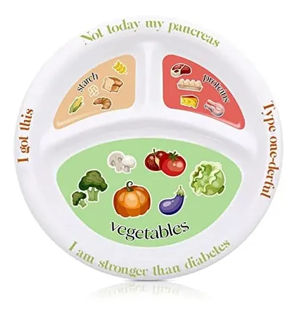

Consejos
¡Descubre nuestros consejos nutricionales y saludables!
Consejo 1: Hidratación adecuada
Bebe al menos 8 vasos de agua al día para mantener tu cuerpo bien hidratado.
Consejo 2: Variedad en la dieta
Incluye una amplia variedad de alimentos en tu dieta para asegurar que estás obteniendo todos los nutrientes necesarios.
Consejo 3: Control de porciones

Controla las porciones que consumes para evitar el exceso de calorías y mantener un peso saludable.
Consejo 4: Evita alimentos procesados
Limita el consumo de alimentos procesados y opta por opciones frescas y naturales siempre que sea posible.
Consejo 5: Actividad física regular
Realiza actividad física regular para mantener un estilo de vida saludable.
Consejo 6: Descanso adecuado
Duerme al menos 7-8 horas por noche para permitir que tu cuerpo se recupere y se mantenga saludable.